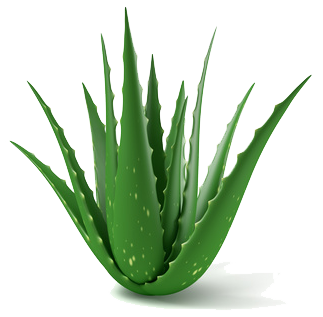
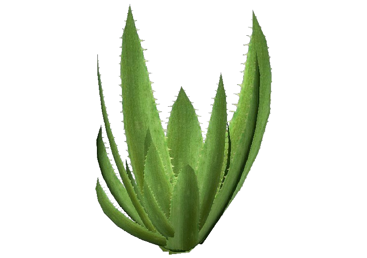
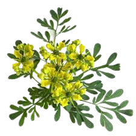
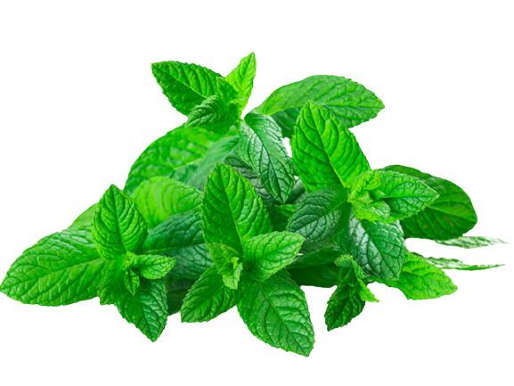
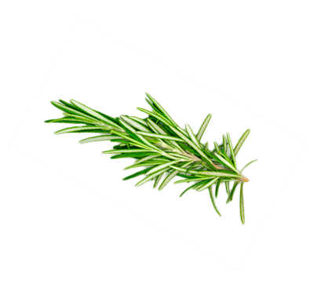
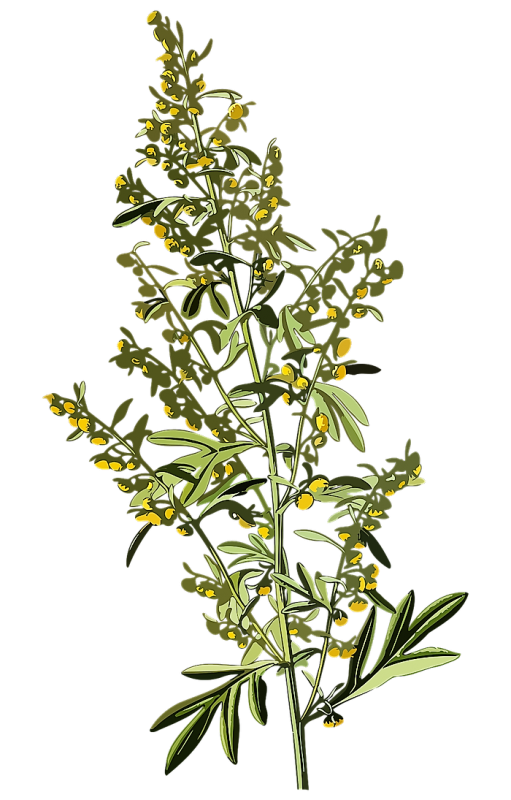
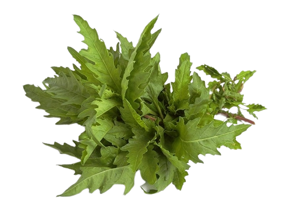

1. Sábila

Nombre comun: Sábila .
Nombre cientifico: Aloe.
Nombre nahualt: Coapatli.
Uso medicinal:
La sábila, es una planta suculenta que se utiliza con diversos fines debido a sus propiedades medicinales. Sus hojas contienen un gel transparente rico en compuestos bioactivos, como polisacáridos, vitaminas, minerales y enzimas. El gel de sábila se utiliza en aplicaciones tópicas para tratar afecciones de la piel, como quemaduras, heridas, irritaciones y problemas cutáneos. Además, se ha utilizado para promover la salud digestiva, fortalecer el sistema inmunológico y proporcionar alivio en casos de quemaduras solares. Sin embargo, es importante usarla con precaución y consultar a un profesional de la salud antes de su uso.
2. Aloe vera

Nombre comun: Aloe vera.
Nombre cientifico: Aloe vera.
Nombre nahualt: huitzmetl.
Uso medicinal:
El aloe vera, o sábila, tiene múltiples usos medicinales. Su gel se aplica tópicamente para cicatrizar heridas, tratar problemas cutáneos como dermatitis y acné, y aliviar quemaduras solares. También se utiliza para mejorar la digestión y fortalecer el sistema inmunológico. Sin embargo, se debe tener precaución al consumirlo oralmente, ya que en altas dosis puede tener efectos laxantes. Además, es importante consultar a un profesional de la salud antes de usarlo con fines medicinales, especialmente si se está tomando medicamentos o se tienen condiciones de salud preexistentes.
3. Manzanilla
Nombre comun: Manzanilla .
Nombre cientifico: Matricaria chamomilla.
Nombre nahualt: Xochipatli.
Uso medicinal:
La manzanilla es una hierba medicinal ampliamente utilizada por sus propiedades calmantes y relajantes. Se utiliza comúnmente en forma de té o infusiones para aliviar el estrés, la ansiedad y promover el sueño reparador. Además, la manzanilla se ha utilizado tradicionalmente para tratar problemas digestivos, como el malestar estomacal, los cólicos y la indigestión. Sus propiedades antiinflamatorias también la hacen útil en el alivio de dolores menstruales y de cabeza. La manzanilla contiene compuestos activos como flavonoides y terpenoides, que contribuyen a sus efectos beneficiosos.
4. Ruda

Nombre comun: Ruda.
Nombre cientifico: Ruta.
Nombre nahualt: Akuatsin .
Uso medicinal:
La ruda es una planta medicinal utilizada para problemas digestivos y regulación menstrual. Se cree que estimula la digestión y alivia malestares estomacales, cólicos y flatulencia. Además, se ha utilizado para aliviar los síntomas del síndrome premenstrual y regularizar el ciclo menstrual. Sin embargo, su uso debe ser cauteloso, ya que altas dosis pueden ser tóxicas. Se recomienda consultar a un profesional de la salud antes de usarla, especialmente durante el embarazo o lactancia. Asimismo, su aplicación tópica puede causar reacciones alérgicas, por lo que se debe probar en una pequeña área de la piel antes de su uso generalizado.
5. Hierbabuena

Nombre comun: Hierbabuena .
Nombre cientifico: Mentha spicata.
Nombre nahualt: Alahuenotl.
Uso medicinal:
La hierbabuena, conocida como menta verde, posee propiedades medicinales versátiles. Se utiliza para aliviar problemas digestivos como indigestión y gases, gracias a su capacidad para relajar los músculos del tracto digestivo. También ayuda en la respiración al descongestionar las vías respiratorias y aliviar síntomas del resfriado y congestión nasal. Su aroma refrescante calma los nervios, alivia la ansiedad y promueve la relajación. Además, se ha utilizado tópicamente para aliviar dolores de cabeza y migrañas. Sin embargo, se debe tener precaución debido a posibles interacciones medicamentosas y reacciones alérgicas. Consultar a un profesional de la salud es recomendable antes de su uso.
6. Hoja Santa
Nombre comun: Hoja Santa .
Nombre cientifico: Piper auritum.
Nombre nahualt: tlanepakilitl,
Uso medicinal:
La hoja santa, también conocida como Piper auritum, es una planta utilizada en la cocina y la medicina tradicional. Se utiliza en la cocina mexicana para dar sabor y aroma a los platillos. Además, se le atribuyen propiedades digestivas, aliviando la indigestión y los cólicos. La hoja santa también posee propiedades antimicrobianas, combatiendo bacterias y hongos dañinos. Asimismo, contiene compuestos antioxidantes que protegen contra el daño de los radicales libres. Sin embargo, se recomienda consultar a un profesional de la salud antes de utilizarla con fines medicinales, ya que puede haber interacciones y efectos adversos en ciertas personas.
7. Romero

Nombre comun: Romero.
Nombre cientifico: Salvia rosmarinus.
Nombre nahualt: tlamacehualnemiliztli.
Uso medicinal:
El romero es una hierba aromática con propiedades medicinales. Se ha utilizado durante siglos por sus beneficios para la salud. Sus compuestos activos poseen propiedades antioxidantes y antiinflamatorias. Se cree que el romero mejora la digestión, alivia dolores musculares y articulares, y estimula la circulación. También se ha utilizado para promover la concentración y la memoria, y para aliviar síntomas de estrés y ansiedad. Además, el romero se emplea en productos para el cuidado del cabello y la piel debido a sus propiedades fortalecedoras y rejuvenecedoras. Sin embargo, se recomienda precaución y consulta médica antes de usarlo con fines medicinales.
8. Hierba maestra

Nombre comun: Hierba maestra .
Nombre cientifico: Artemisia absinthium.
Nombre nahualt: xihuitl.
Uso medicinal:
La hierba maestra, también conocida como Chenopodium ambrosioides, es una planta medicinal valorada por sus propiedades antiparasitarias y digestivas. Se utiliza para tratar trastornos digestivos como la indigestión, los cólicos y los parásitos intestinales. Sus compuestos activos han demostrado efectos antiparasitarios contra lombrices intestinales y otros parásitos. Además, se le atribuyen propiedades antiinflamatorias y antimicrobianas. Sin embargo, su uso debe ser supervisado y es importante seguir las recomendaciones de dosificación adecuadas. Se recomienda consultar a un profesional de la salud antes de usarla, especialmente durante el embarazo, la lactancia o en niños.
9. Epazote

Nombre comun: Epazote.
Nombre cientifico: Dysphania ambrosioides.
Nombre nahualt: epasotl.
Uso medicinal:
El epazote es una hierba medicinal y culinaria con beneficios para la salud. Se utiliza para aliviar problemas digestivos como flatulencia y cólicos, gracias a su capacidad para estimular las enzimas digestivas. Además, se ha utilizado tradicionalmente como un vermífugo natural para eliminar parásitos intestinales. El epazote también tiene propiedades diuréticas suaves, promoviendo la eliminación de toxinas y líquidos del cuerpo. Además, se ha observado que tiene propiedades antimicrobianas, combatiendo bacterias y hongos. Sin embargo, su uso debe ser supervisado, especialmente durante el embarazo, debido a su potencial efecto abortivo. Es recomendable consultar a un profesional de la salud.
10. Orégano
Nombre comun: Oregano .
Nombre cientifico: Origanum vulgare.
Nombre nahualt: ahuiyaxihuitl.
Uso medicinal:
El orégano es una hierba aromática que no solo se utiliza en la cocina, sino que también tiene propiedades medicinales. Contiene compuestos antioxidantes que protegen contra el daño de los radicales libres. Además, tiene propiedades antimicrobianas que pueden combatir infecciones y problemas de la piel. El orégano también se utiliza para aliviar problemas digestivos como la indigestión y la flatulencia. Además, posee propiedades antiinflamatorias que pueden ayudar a reducir la inflamación en condiciones como la artritis. Sin embargo, se debe tener precaución con el uso de aceite de orégano concentrado y se recomienda consultar a un profesional de la salud.